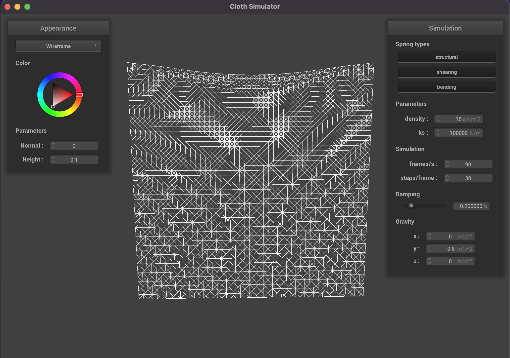
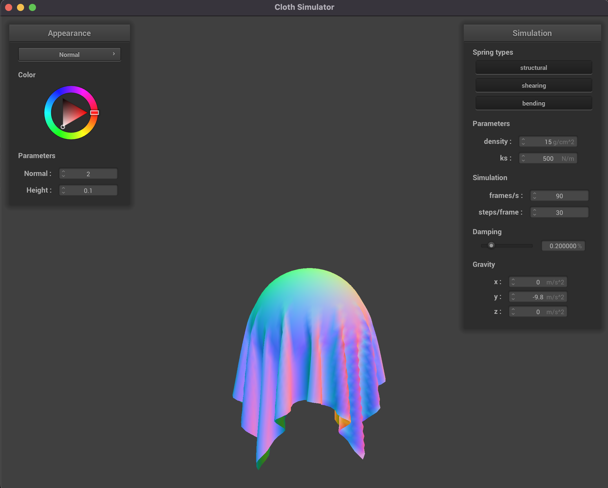
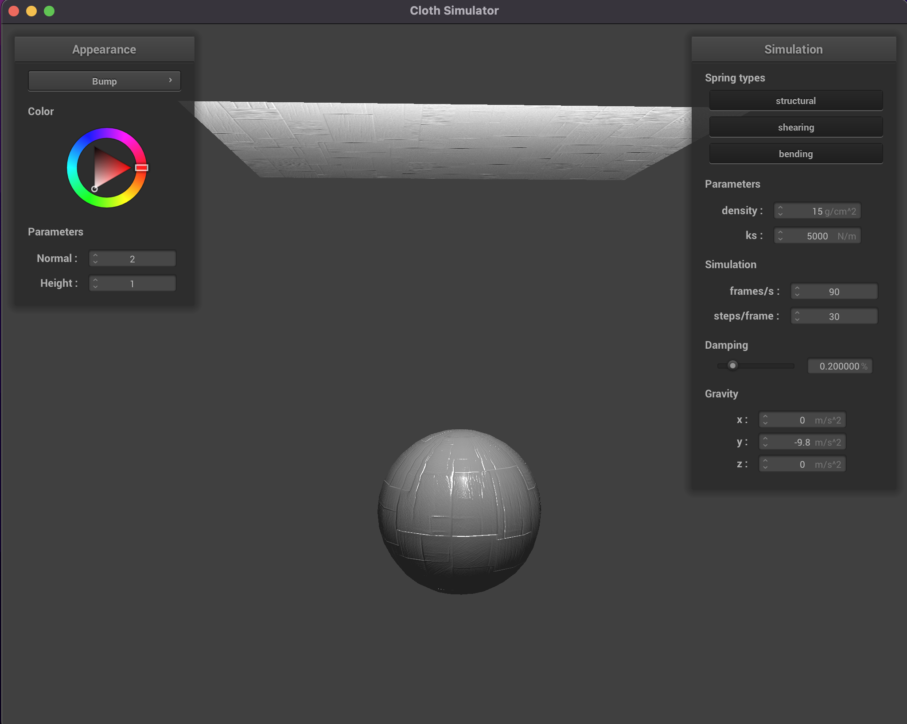

CS 184: Computer Graphics and Imaging, Spring 2023
Project 4: Cloth Simulator
Anav Mehta
Overview
Give a high-level overview of what you implemented in this project. Think about what you've built as a whole. Share your
thoughts on what interesting things you've learned from completing the project.
In this Project, I implemented a point-mass spring grid to accurately simulate a cloth. We used Verlet
integration to compute the next positions of each mass based on various factors such as the spring force/rest length,
external forces, and damping of the system. We then fixed problems with self-collisions and with other objects. Finally, I
implemented various shading techniques such as Blinn-Phong, Diffuse shading, and Bump/Displacement Mapping. The biggest
thing I've learned is how important springs are in the animation world.
Take some screenshots of scene/pinned2.json from a viewing angle where you can clearly see the cloth wireframe
to show the structure of your point masses and springs.
Zoomed in
Initial configuration ($\text{ks} = 5,000$)
Zoomed out
Show us what the wireframe looks like (1) without any shearing constraints,
(2) with only shearing constraints, and (3) with all constraints.
Experiment with some the parameters in the simulation.
To do so, pause the simulation at the start with P, modify the values of interest, and then resume by pressing
P again.
You can also restart the simulation at any time from the cloth's starting position by pressing R.
Describe the effects of changing the spring constant ks; how does the cloth behave from start to rest with
a very low ks?
A high ks?
ks = 5 N/m

ks = 100,000 N/m
With a very low spring constant (ks = 5 N/ms) the cloth is much more loose as the springs have a very low stiffness and
require less force to deform it so it will continue to bounce and move after being dropped. With a very high spring constant
on the other hand (ks = 100,000 N/m), the cloth requires a much greater force to deform each spring so the cloth has less
sag.
density = 5 g/cm^2
density = 100 g/cm^2
What about for density?
As we increase the density, the cloth will begin to jitter more compared to the original parameters and the middle of the
cloth will begin to droop more and more.
damping = 0.000%
damping = 1.000%
What about for damping?
If we scale the damping to a much higher percentage, we can see the entire scene slows down and moves much slower and
together while with a much lower damping constant the cloth will fall much quicker and swing back and forth forever.
Show us a screenshot of your shaded cloth from scene/pinned4.json in its final resting state!
If you choose to use different parameters than the default ones, please list them.
Show us screenshots of your shaded cloth from scene/sphere.json in its final resting state
on the sphere using the default ks = 5000 as well as with ks = 500 and ks = 50000.

$\text{ks} = 500$
Initial configuration ($\text{ks} = 5,000$)
$\text{ks} = 50,000$
Describe the differences in the results.
Comparing the k = 500 N/m cloth to a k = 50,000 N/m cloth we see differences in how the cloth droops over the sphere. When
the ks is low we can see that the cloth's much looser hanging over the sphere while with a higher ks it looks more
stiff as the springs take more force to deform.
Show us a screenshot of your shaded cloth lying peacefully at rest on the plane.
If you haven't by now, feel free to express your colorful creativity with the cloth!
(You will need to complete the shaders portion first to show custom colors.)
Show us at least 3 screenshots that document how your cloth falls and folds on itself,
starting with an early, initial self-collision
and ending with the cloth at a more restful state (even if it is still slightly bouncy on the ground).
Self collision 1
Self collision 2
Self collision 3
Vary the density as well as ks
and describe with words and screenshots how they affect the behavior of the cloth as it falls on itself.
$\text{density} = 1$
$\text{density} = 50$
$\text{ks} = 1,000$
$\text{ks} = 7,500$
When we vary the density we can see that with a smaller density, the cloth does not fold up on itself as much as a higher
density and create much larger rolls compared the 50 g/cm^2 density cloth. When we increase the density, we do see that the
cloth wants to fold in more on itself. When we increase the ks, the cloth is less likely to fold in on itself and appears
more stiff while when we decrease the ks, the cloth folds in more on itself and bounces much more.
Explain in your own words what is a shader program and how vertex and fragment shaders work together to create lighting
and material effects.
Shaders are programs that run in parallel on the GPU. Using vertex and fragment shaders we can create realistic lighting
effects. The process starts by processing each triangles vertex and transforming to a 2D space and feeding these calculated
outputs into a fragment shader. The fragment shader then calculates the final color of each fragment given the outputs of
the fragment shader.
Explain the Blinn-Phong shading model in your own words.
Show a screenshot of your Blinn-Phong shader outputting only the ambient component, a screen shot only outputting the
diffuse component, a screen shot only outputting the specular component, and one using the entire Blinn-Phong model.
The Blinn-Phong is a extension of the Phong shading model that accurately renders specular reflections something that the
Phong shading model fails to do in certain scenes due to discarding light with angles greater than 90 degrees. The
Blinn-Phong model solves this by using a half vector, a unit vector defined halfway between the camera/view direction and
the light incident direction. Blinn-Phong then calculates the dot product with the normal and this half vector instead of
the reflection vector.
Ambient component only
Diffuse component only
Specular component only
Complete Blinn-Phong model
Show a screenshot of your texture mapping shader using your own custom texture by modifying the textures in
/textures/.
Show a screenshot of bump mapping on the cloth and on the sphere.
Show a screenshot of displacement mapping on the sphere.
Use the same texture for both renders.
You can either provide your own texture or use one of the ones in the textures directory,
BUT choose one that's not the default texture_2.png.
Compare the two approaches and resulting renders in your own words.
Compare the two shaders react to the sphere by changing the sphere mesh's coarseness by using
-o 16 -a 16 and then -o 128 -a 128.

Bump Mapping on the Cloth -o 16 -a 16
Bump Mapping on the Sphere -o 16 -a 16
Bump Mapping on the Cloth -o 128 -a 128
Bump Mapping on the Sphere -o 128 -a 128
Displacement Mapping on the Sphere -o 16 -a 16
Displacement Mapping on the Sphere -o 128 -a 128
Bump and displacement mapping are very similar, except displacement mapping actually displaces the vertex positions in an
additional step of displacing the vertex positions and changes the geometry. Bump mapping only modifes the normals of
an object. Displacement mapping has more "bumpy" features because the surface is actually changing physically rather than
just giving the illusion there are bumps.
When we increase the coarseness, we don't notice much difference in the bump mapping. On the other hand, we can see that in
displacement mapping an increase in detail of the texture.
Show a screenshot of your mirror shader on the cloth and on the sphere.